Collect
Save what you like and group it by family. The vocabulary under each family is how you ask for it.
Every direction in this project, grouped by design family, with the words to ask for it, an image prompt and a ready brief. Add your own finds from Dribbble, Pinterest and X.
32 references · 6 families · briefs in 4 parts
Save what you like and group it by family. The vocabulary under each family is how you ask for it.
Impeccable is installed in this repo (.claude/skills/impeccable) and its 62 anti-slop rules were checked on every page. Hero imagery needs an image model such as Higgsfield, connected to your own account.
Cast a wide net (done: 32 directions), pick one, ask for three body variations, choose, then tune the hero image and the details with the Tweaks panel on every page. Copy the tweaks back into a prompt to bake them in.
Craft objects seen up close: engraved metal, glass, paper, roast and ink. Serif display type, dark or deep grounds, one precious accent, slow reveals.
macro materialengraved detailserif displaydeep groundone precious accentslow reveal
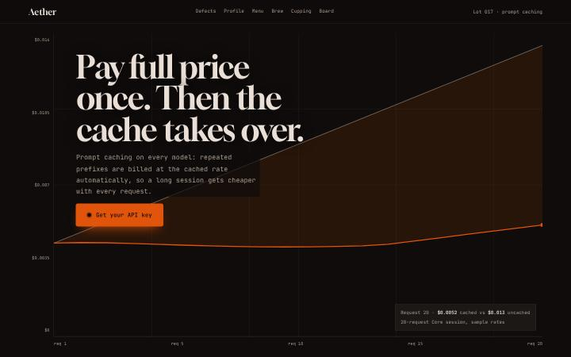
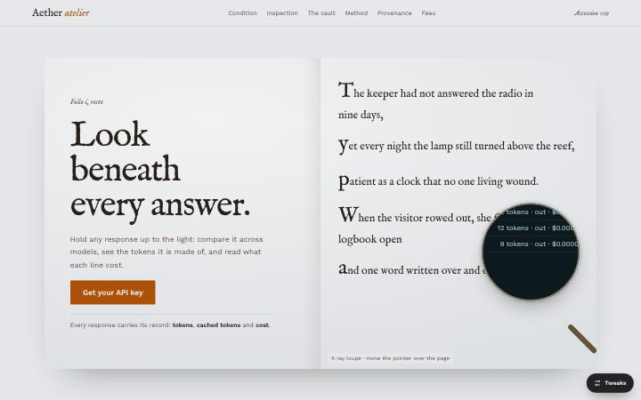
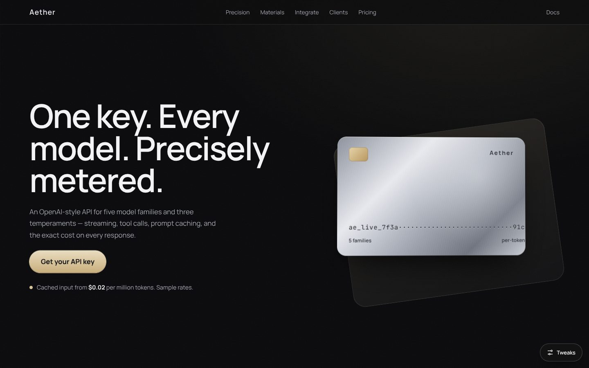
Generous space, hairlines and paper-like grounds. Roman serifs, specimen plates and captions; colour used the way ink is.
negative spacespecimen platehairline rulesroman serifcaption-ledink accent
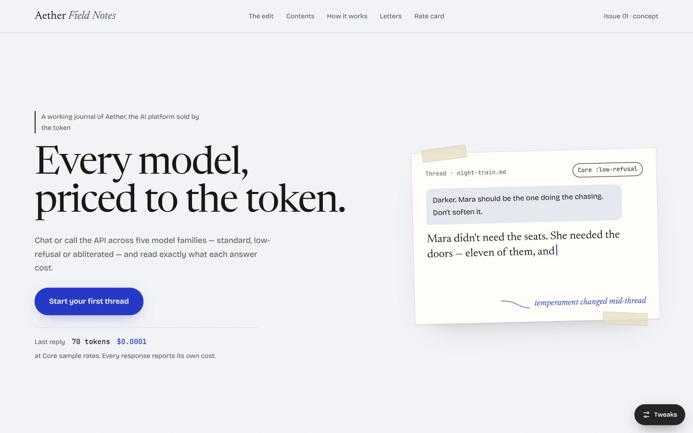
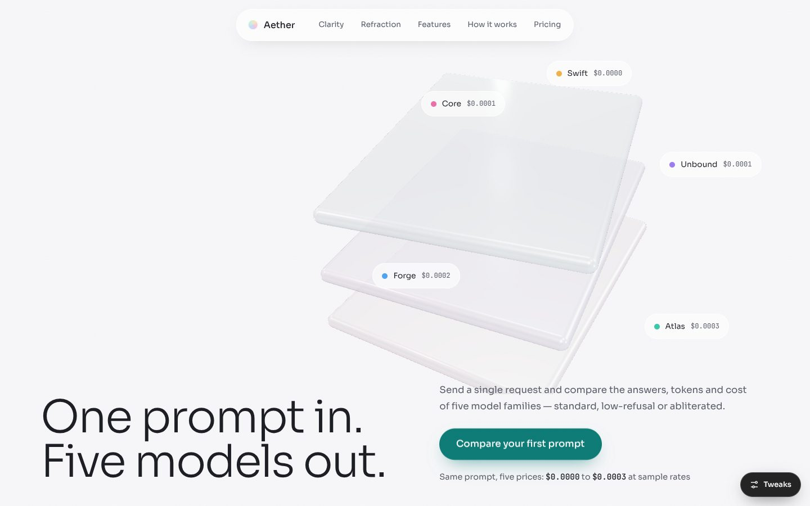
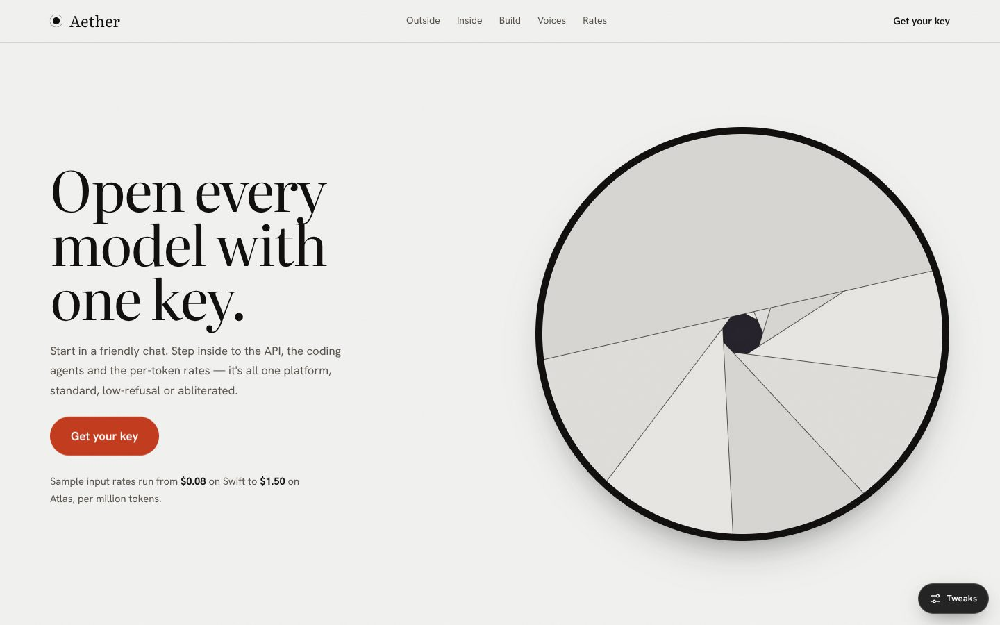
The page behaves like an instrument: live canvases, mono labels, measured grids and one signal colour kept for live data.
telemetryinstrument paneldata as texturemono labelssignal colourprocedural canvas
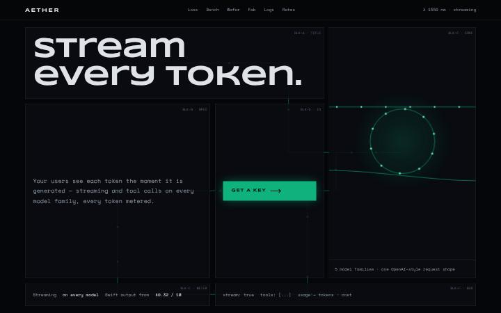
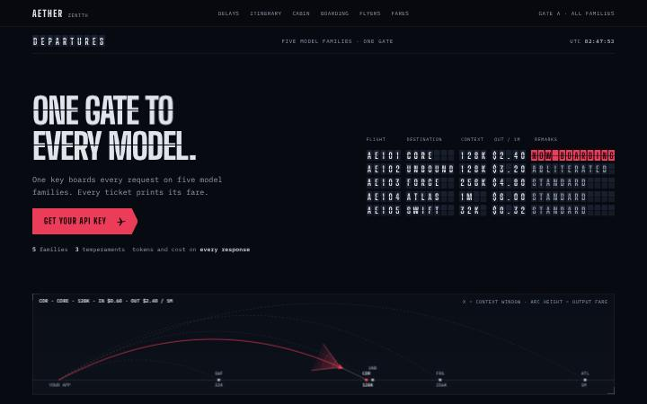
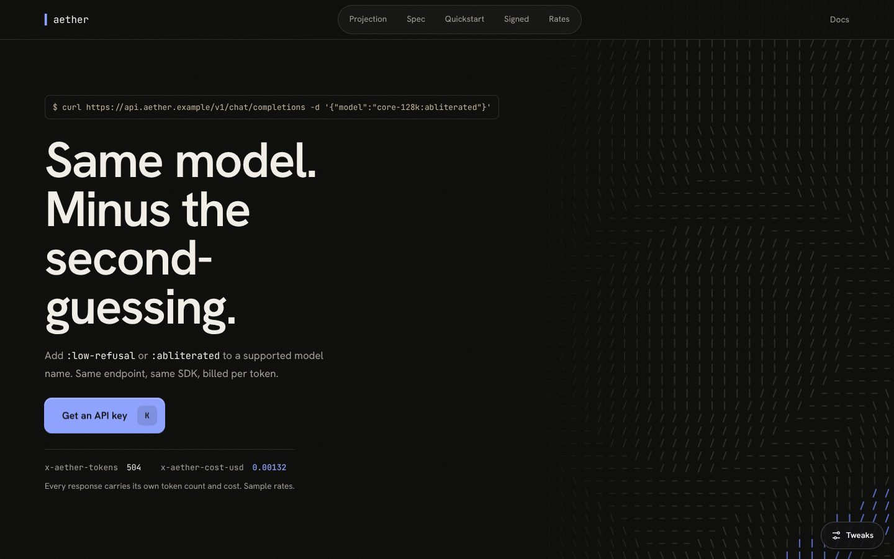
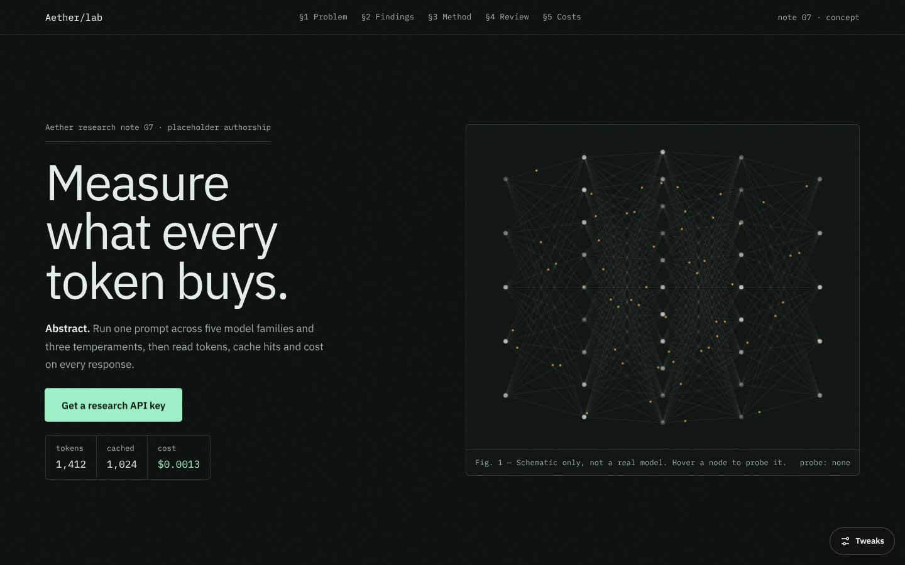
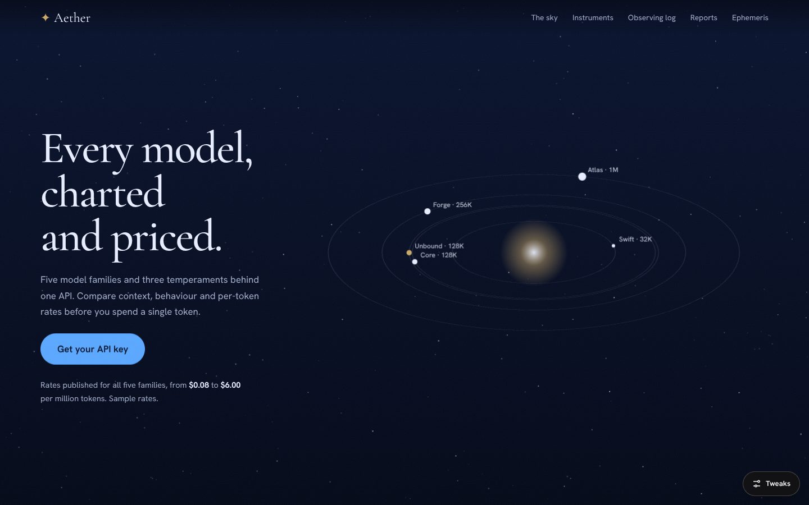
Grid, scale and diagram do the persuading. Modular blocks, strict type steps, a primary signal colour, the product as an exploded drawing.
strict gridtype scalemodular blocksexploded diagramprimary signalconfigurator
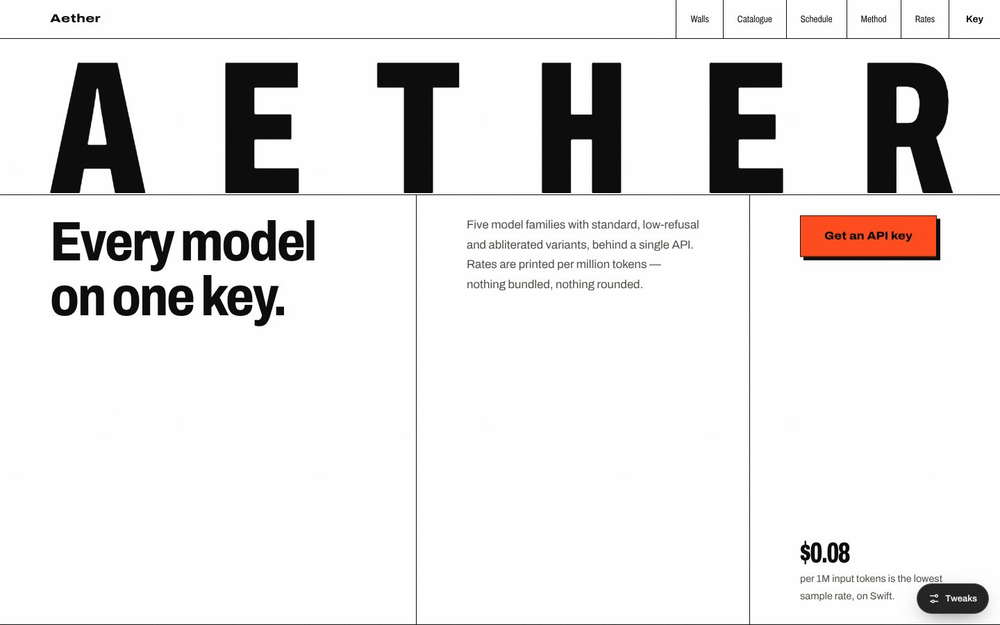
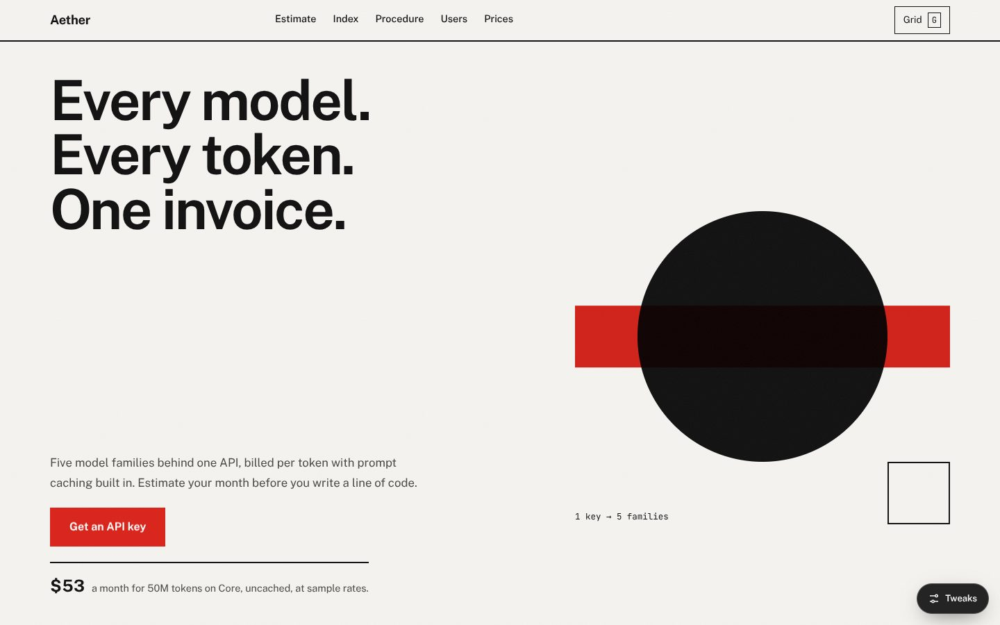
Scroll works as a camera: descents, horizons, device reveals and sound. Big shifts in scale, dark grounds, one warm light.
scroll cameradepth descenthorizon linedevice revealscale shiftwarm key light
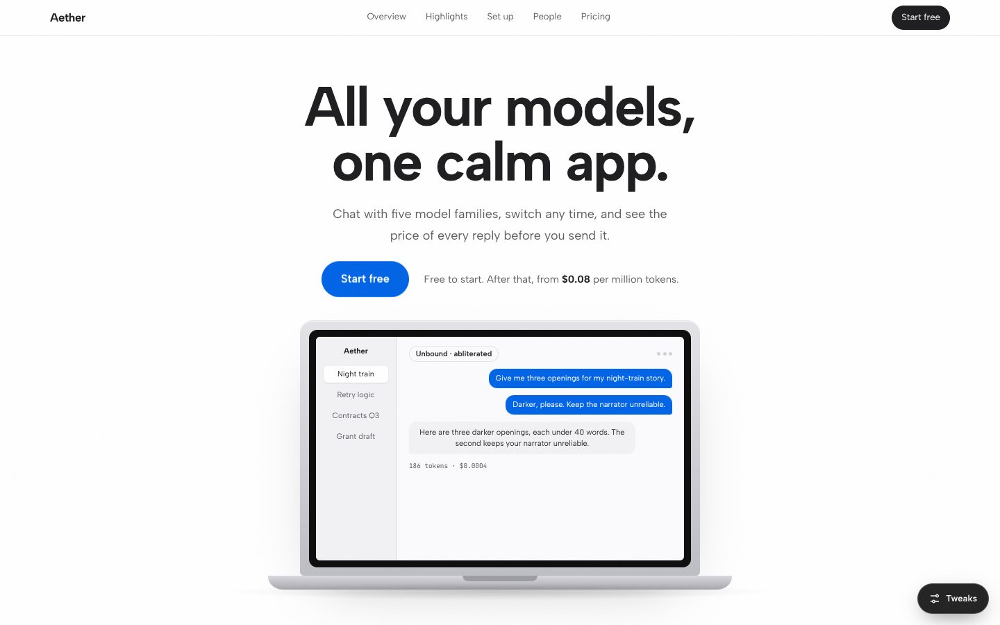
The product is the hero: a live console or objects you can drag before reading a word. Colour blocks and chunky controls.
live demo firstdraggable objectscolour blockingchunky controlsinstant feedback
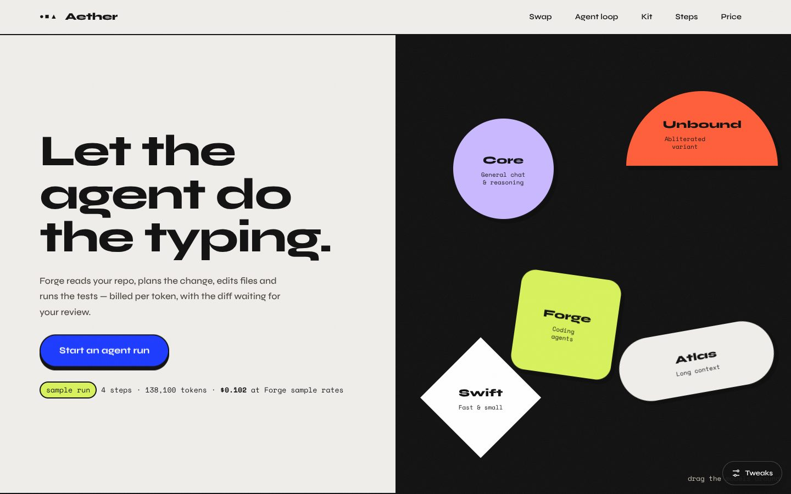
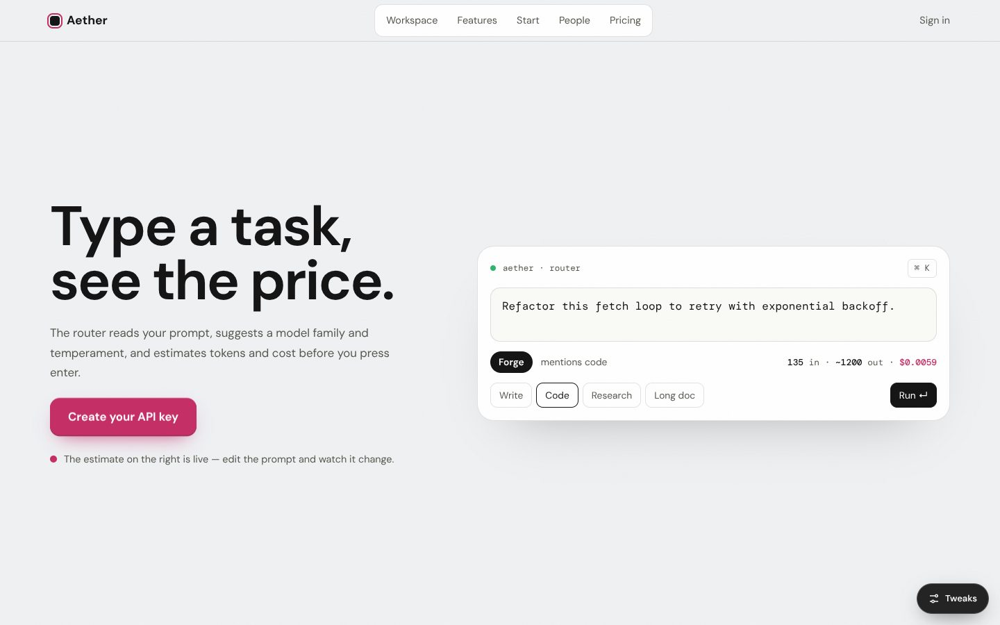